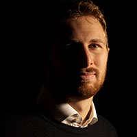

I am a PhD candidate in Economics and Finance at the University of Rome Tor Vergata, working at the intersection of development and environmental economics — poverty, food security, carbon policy, and the political economy of climate action. I am currently a trainee at the European Commission's Joint Research Centre, and have consulted for FAO, the World Bank, IDOS, and Bioversity International. Before economics, I worked as a freelance photojournalist.
